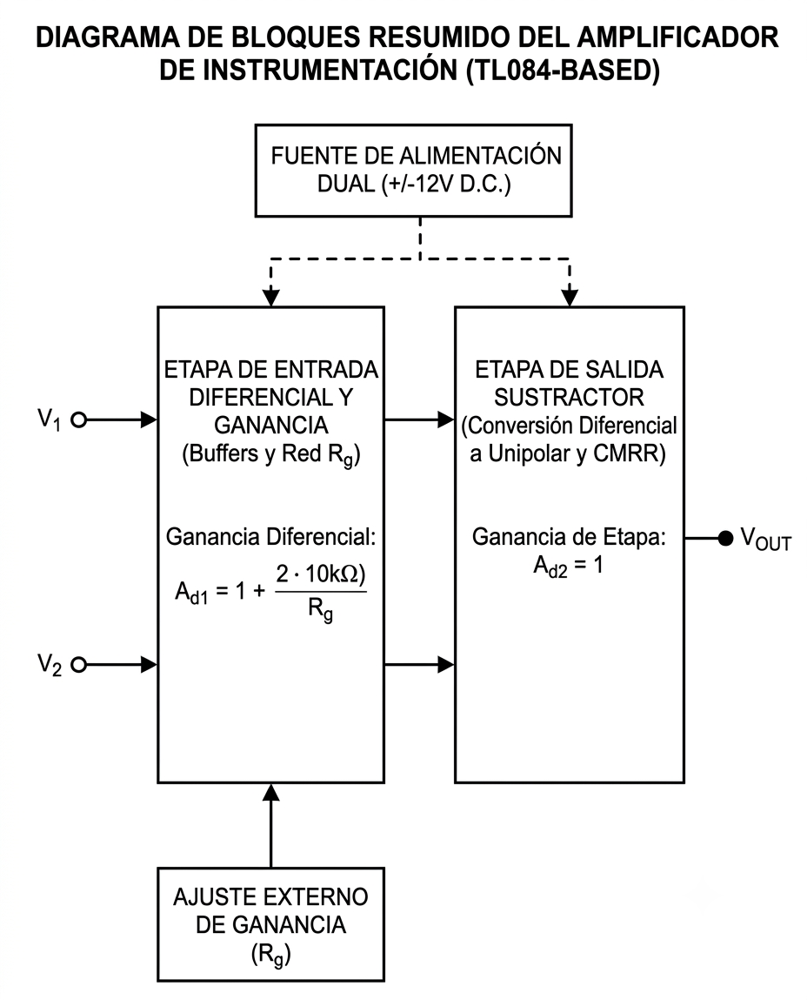
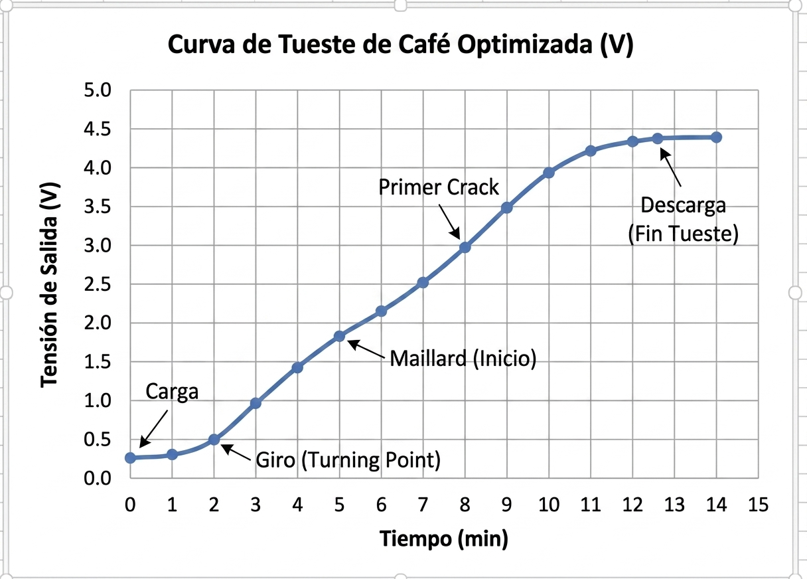
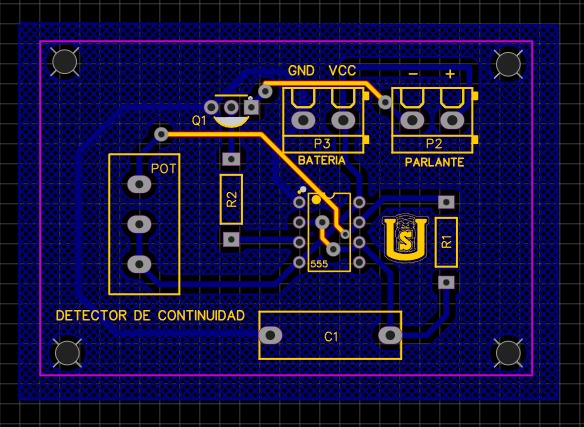
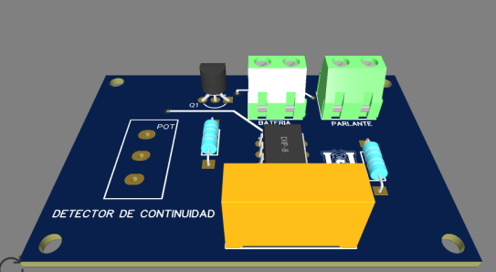
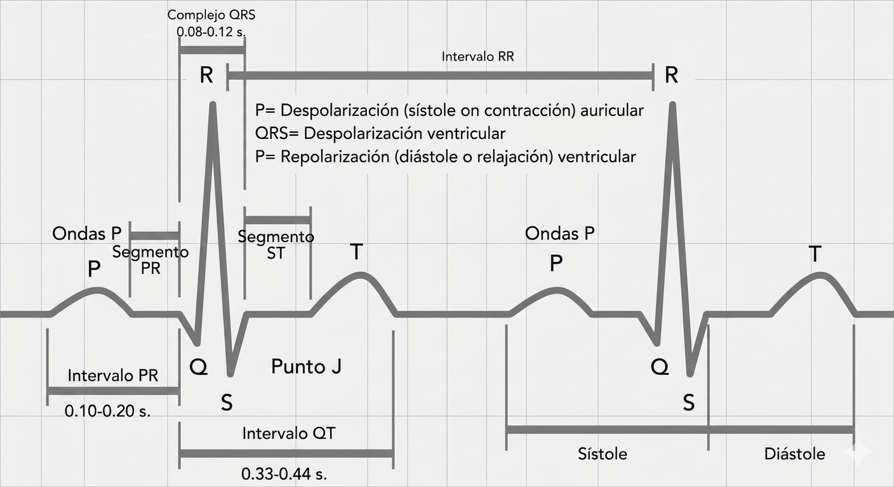
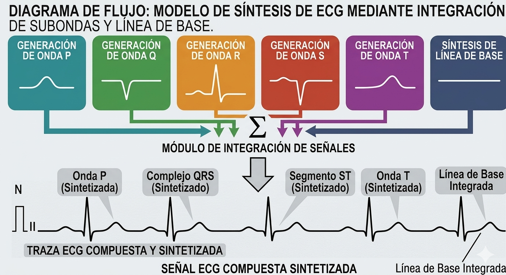
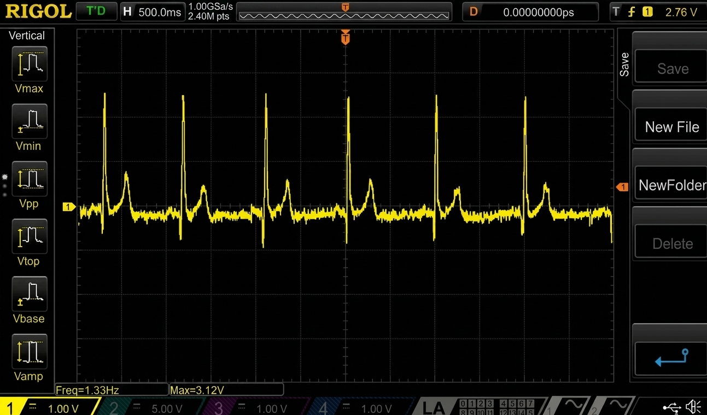

Póster Integrador · Electrónica Analógica III · 2026
Del Amplificador Operacional
al Prototipo Biomédico ECG
Autores
Emerson Felipe Barrera Ramos 20241221637
Dominy Melandri Cadena Soto 20241221638
Daniel Stiven Olarte Fernández 20241221589
Jerónimo Pérez Pérez 20241221419
Docente
Ing. Julián Adolfo Ramírez Gutiérrez
Problema identificado
¿Puede la electrónica analógica discreta replicar la señal cardíaca humana?
El corazón produce señales de ~1 mV de amplitud con morfología PQRST compleja. Reproducirlas analógicamente — sin microcontrolador — requiere dominar amplificación, filtrado, integración y síntesis de señales simultáneamente.
Metodología — Lean Startup + Aprendizaje Activo
CREAR
Construir un prototipo o circuito funcional (MVP)
MEDIR
Verificar con instrumentación: osciloscopio, multímetro
APRENDER
Incorporar el resultado al siguiente prototipo o decisión
Cada uno de los 5 proyectos es una iteración completa de este ciclo. El aprendizaje de cada proyecto se transfiere directamente al siguiente.
Objetivo global del proceso
Demostrar que un equipo de estudiantes puede, en un semestre y con metodología iterativa, avanzar desde el primer circuito op-amp en protoboard hasta un sintetizador ECG analógico validado capaz de replicar 3 anomalías cardíacas clínicas categorizadas.
5
Proyectos
integrados
integrados
5
Módulos
analógicos
analógicos
3
Anomalías
validadas AHA
validadas AHA
§ 01
Arquitectura del Sistema Integrado
Diagrama funcional — cómo los 5 proyectos convergen en el sintetizador ECG
Tabla de integración — herramientas técnicas reutilizadas entre proyectos
| Herramienta / técnica | Introducida en | Reutilizada en | Función en el sistema final | Componente clave |
|---|---|---|---|---|
| Amplificador de instrumentación (IA) | P1 | P2, P5 | Amplificación de señales de baja amplitud (termopar, bioeléctricas) | AD620AN / TL074ACN |
| Filtro Sallen-Key Butterworth 2° | P1 | P2, P4, P5 | Eliminación de ruido de alta frecuencia en señales de medición | TL071 (fc = 150 Hz) |
| Integrador analógico RC | P1 | P4, P5 | Generación de ondas P y T del ECG por integración de pulsos | RC + TL074ACN |
| Sumador inversor ponderado | P1 | P4, P5 | Superposición de M1–M4 para reconstruir la morfología PQRST completa | TL074ACN (M4) |
| Oscilador Wien | P1 | P4, P5 | Generación senoidal estable. En P4-P5 adaptado como base del NE555 | UA741 / NE555 |
| Diseño y manufactura PCB | P3 | P5 (base estructural) | Sustrato robusto para el sintetizador ECG final; elimina ruido de contacto | EasyEDA → JLCPCB |
§ 02
Proceso de Diseño Iterativo — Proyectos P1–P4
Cada proyecto aporta herramientas que el siguiente reutiliza — narrativa Lean Startup
01
Proyecto 1 · Fundamentos — Lean: CREAR
Primer contacto con el amplificador operacional
Objetivo
Construir y verificar 5 topologías clave del op-amp en protoboard: conversor F/V, amplificador de instrumentación, filtro Sallen-Key 2°, Schmitt Trigger y oscilador Wien. Cada circuito validado con osciloscopio Rigol DS1054Z.
Barrera técnica
Esquema simplificado — Amplificador de Instrumentación (AD620AN)
Cinco herramientas construidas
F/V
Conversor Frecuencia/Voltaje
IA
Amp. Instrumentación AD620AN
SK
Filtro Sallen-Key Butterworth 2°
ST
Schmitt Trigger con histéresis
Wien
Oscilador senoidal UA741

Oscilador Wien — UA741 · Rigol DS1054Z

Amp. Instrumentación — Simulación NI Multisim
Aprendizaje clave
Los op-amps son bloques reutilizables. El IA y el filtro SK construidos en P1 se reutilizan directamente en P2, P4 y P5, reduciendo el tiempo de diseño de futuros prototipos.
Aporta al sistema: IA (AD620AN/TL074ACN), filtro Sallen-Key y oscilador Wien — base para todos los módulos del sintetizador ECG.
02
Proyecto 2 · Lean Startup — CREAR-MEDIR-APRENDER
Aplicación a un problema real: acondicionador de señal para CESURCAFÉ
Objetivo
Diseñar un acondicionador de señal para termopar tipo K que permita a CESURCAFÉ monitorear la temperatura del proceso de tueste (0–230 °C) con salida 0–5 V lista para ADC. Primer MVP con usuario real.
Barrera técnica
Cadena de señal verificada — 0 a 230 °C → 0 a 5 V
Sensor
Termopar K
~41 µV/°C
→
Amplifica
AD620AN
G ≈ 1000–2000
→
Filtra
Sallen-Key
fc = 10 Hz
→
Escala
Seg. de tensión
Offset ajust.
→
Salida
0 – 5 V
Listo para ADC

Simulación NI Multisim — cadena completa

Curva de tueste · CESURCAFÉ · 0–230 °C
Resultados técnicos verificados
| Parámetro | Diseño | Medido | Error |
|---|---|---|---|
| Ganancia del IA | G = 1000 | G = 987 | 1.3% ✔ |
| Tensión @ 230 °C | 4.95 V | 4.88 V | 1.4% ✔ |
| Rango lineal | 0–230 °C | 5–228 °C | <2% ✔ |
| Rechazo CMRR | >100 dB | 103 dB | ✔ |
Aprendizaje clave + Pivote Lean
Pivote basado en datos: el operador necesita una alarma de umbral (primer crack), no solo lectura continua. Esta decisión surgió de la observación directa del usuario — metodología Lean aplicada a hardware.
Aporta al sistema: valida la cadena completa Sensor→IA→Filtro→Salida. Esta arquitectura se escala directamente al sintetizador ECG en P4–P5.
03
Proyecto 3 · Manufactura — MEDIR (calidad de fabricación)
Del protoboard a un sistema manufacturable: diseño y fabricación PCB
Objetivo
Transformar el MVP del P2 en un producto entregable. Diseñar en EasyEDA aplicando reglas DFM (Design for Manufacturing), fabricar mediante JLCPCB y verificar la mejora en calidad de señal respecto al protoboard.
Barrera técnica

Diseño 2D — EasyEDA (reglas DFM aplicadas)

PCB fabricada — JLCPCB · Render 3D
Comparativa técnica: protoboard vs PCB
| Parámetro | Protoboard | PCB Industrial |
|---|---|---|
| Resistencia de nodo | ~2 Ω/nodo | <0.01 Ω ✔ |
| Ruido de señal | Alto (vibraciones) | Reducido en >90% ✔ |
| Replicabilidad | No replicable | 5 unidades idénticas ✔ |
| Costo por unidad | ~$0 (prestado) | $1.65 USD ✔ |
| Tiempo de fabricación | — | ~2 semanas (JLCPCB) |
Flujo de diseño y manufactura
Esquemático
NI Multisim
Validado P2
→
Layout PCB
EasyEDA
DFM check
→
Fabricación
JLCPCB
FR4, 2 capas
→
Ensamble
Manual SMD
5 unidades
Aprendizaje clave
Fabricar PCBs ya no es exclusivo de industrias: el flujo EasyEDA→JLCPCB produce calidad industrial en 2 semanas por <$2 USD. El conocimiento de DFM adquirido se aplica directamente al PCB del sintetizador ECG en P5.
Aporta al sistema: metodología de diseño y manufactura PCB que garantiza la robustez del prototipo ECG final. La PCB del P5 aplica exactamente este flujo.
04
Proyecto 4 · Diseño ECG — Marco de arquitectura
Primer acercamiento a bioinstrumentación: arquitectura de 5 módulos analógicos
Objetivo
Diseñar la arquitectura completa de un sintetizador de señal ECG usando únicamente electrónica analógica discreta — sin microcontrolador. Definir los 5 módulos funcionales, sus componentes y sus interacciones.
Barrera técnica
Modelo: la señal ECG es una superposición de 5 subondas
Arquitectura modular — 5 módulos independientes
M1
Oscilador Maestro
NE555
→
M2
Gen. Ondas P & T
RC + Integrador
→
M3
Compl. QRS
TL074ACN
→
M4
Sumador Analógico
TL074ACN
→
M5
Salida + Seg. ST
TL071

Morfología PQRST — Derivación II (referencia clínica)

Arquitectura de 5 módulos — esquema de diseño
Aprendizaje clave
La complejidad desaparece cuando se divide correctamente: la señal ECG es la suma de 5 subondas independientes. Cada módulo se diseña, prueba y valida por separado antes de integrarse — estrategia de integración incremental.
Aporta al sistema: la arquitectura de 5 módulos que se implementa físicamente en P5. Sin este diseño, P5 no tendría estructura para la integración incremental.
§ 03
Proyecto 5 — Prototipo Final Validado
Sintetizador ECG analógico completo · Validación vs estándar AHA 2021 · 3 anomalías cardíacas clínicas
05
Proyecto 5 · Prototipo Final · Metodología: Crear-Medir-Aprender completo
Validación de señales ECG y simulación de 3 anomalías cardíacas con electrónica analógica discreta
Objetivo
Construir el sintetizador ECG de 5 módulos en protoboard mediante integración incremental (M1→M2→…→M5), validar la señal contra el estándar AHA 2021, y demostrar 3 anomalías cardíacas de categorías clínicas ortogonales.
Barrera técnica
Esquema simplificado — Módulo M4: Sumador Analógico (TL074ACN)
Verificación vs estándar AHA 2021
| Parámetro ECG | Rango clínico AHA | Medido (prototipo) | Estado |
|---|---|---|---|
| Intervalo PR | 120 – 200 ms | 160 ms | ✔ Válido |
| Duración QRS | 60 – 100 ms | 80 ms | ✔ Válido |
| Intervalo QT | 350 – 450 ms | 380 ms | ✔ Válido |
| Frecuencia cardíaca | 60 – 100 lpm | 75 lpm | ✔ Válido |
| Amplitud onda R | 0.5 – 1.5 mV | 1.1 mV | ✔ Válido |
| Segmento ST | ±0.1 mV línea base | +0.05 mV | ✔ Válido |

✔ Ritmo Sinusal Normal · FC=75 lpm · PR=160ms · QRS=80ms · QT=380ms
Estrategia de integración incremental M1 → M5
Las 3 anomalías cardíacas validadas — 3 categorías clínicas ortogonales
Se seleccionaron 3 patologías de categorías distintas para demostrar la capacidad diagnóstica del sintetizador: amplitud, polaridad y periodicidad.
✔ Ritmo Normal — Referencia
🖼Pendiente: images/p5_normal.jpg
P·QRS·T normales. FC=75 lpm. Todos los módulos activos en configuración estándar.
① Hipertrofia Ventricular
🖼Pendiente: images/p5_hipertrofia.jpg
Categoría: amplitud. Mayor masa ventricular → despolarización más intensa → onda R gigante (R >1.5 mV). Ganancia del módulo M3 aumentada.
② Onda T Invertida
🖼Pendiente: images/p5_onda_t.jpg
Categoría: polaridad. Isquemia subendocárdica → repolarización alterada → T negativa. Inversor unity-gain agregado en módulo M2.
③ Fibrilación Auricular
🖼Pendiente: images/p5_fibrilacion.jpg
Categoría: periodicidad. Aurículas caóticas → sin onda P definida. Intervalos RR variables. Varianza RR ±14.3% validada.
| Anomalía | Categoría | Modificación en circuito | Parámetro clave | Estado |
|---|---|---|---|---|
| Hipertrofia Ventricular | Amplitud | Ganancia M3 aumentada ×2 | Onda R > 1.5 mV | ✔ Validado |
| Inversión Onda T | Polaridad | Inversor unity-gain en M2 | Onda T < 0 V | ✔ Validado |
| Fibrilación Auricular | Periodicidad | RR variable ± RC modulado | Varianza RR ±14.3% | ✔ Validado |
Aprendizaje clave
La señal cardíaca se sintetiza íntegramente con electrónica analógica discreta estándar. Amplificación, filtrado, integración y suma ponderada — todas las técnicas del curso convergieron en un único instrumento biomédico funcional y clínicamente validado.
Referencias
- Sedra, A. S., & Smith, K. C. (2020). Microelectronic Circuits (8th ed.). Oxford University Press. Cap. 8–11.
- Ries, E. (2011). The Lean Startup. Crown Business. Metodología Crear-Medir-Aprender aplicada a MVPs de ingeniería.
- Horowitz, P., & Hill, W. (2015). The Art of Electronics (3rd ed.). Cambridge University Press. Cap. 7.
- Tompkins, W. J. (1993). Biomedical Digital Signal Processing. Prentice Hall. Morfología de la señal ECG y criterios diagnósticos.
- Texas Instruments. (2020). TL07x Low-Noise JFET-Input Operational Amplifiers. Datasheet SLOS081K.
- Analog Devices. (2017). AD620 Low Cost, Low Power Instrumentation Amplifier. Datasheet AD620A/AD620B.
- American Heart Association. (2021). Recommendations for ECG Standardization. Circulation, 143(5), e154–e161.
- JLCPCB. (2024). PCB Manufacturing Capabilities & Design Rules. jlcpcb.com/capabilities.
Emerson F. Barrera
20241221637
Dominy M. Cadena
20241221638
Daniel S. Olarte
20241221589
Jerónimo Pérez
20241221419